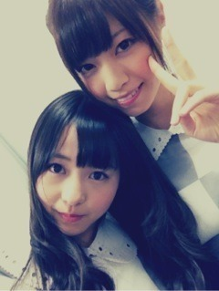
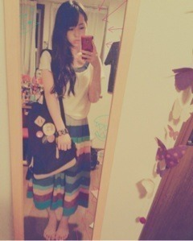
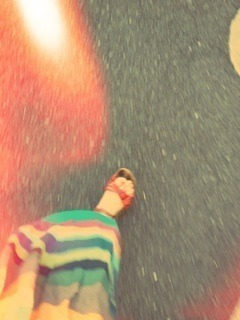

2012/0821Tue一周年*marika
乃木坂46が結成して
一周年経ちました。
小さい頃の夢
絵を描くことがすきだったから
漫画家
お母さんに憧れて
ファッションデザイナー
バレエに夢中になって
やりたいと思った
バレリーナ
ファッションがすきだから
ファッションモデル
乃木坂46というアイドルになる前の
私は普通の女子。
中学はずっと習ってたバレエに
夢中で、モデルになりたいという
願望もあって、いろんなことに
手を出してました。
高校受験、そろそろ自分が
いちばん何になりたいのか真剣に
考えなくちゃいけない時期。
この時私はバレエもモデルの夢も、
とすごい無理なことを言ってました。
バレエもコンクールに出たことが
あるわけでもないのに、
モデルもほとんどやってないに近い。
どちらも中途半端でした。
そのことで親と毎日のようにこの話、
毎日ケンカしてました。
本当にやってることが全部全部
中途半端で、
私は何をやりたいんだろう？
バレエのレッスンに通いながら
いろんなオーディションを
受けてる日々。
でも、なんの結果もなくて。
ちゃんとした目標もないのに
ただなんとなく、やってた。
そんな時に
「乃木坂46」オーディションが
あることを知って。
自分はアイドルになることが
夢じゃない。
でも、今までのことが
悔しくて情けなくて...
これで最後にしよう。
受からなかったら、
諦めて普通の生活をしよう。
最後の挑戦だ！！
って思って受けたのが
この「乃木坂46」なんです。
最後の挑戦、と言っても、
受からないだろうと思いながら
受けてました。
自信がなかった。
何をやっても中途半端な私が
受かるのかな。って
第1次審査から第5次審査まで
あったのですが、
自分の番号が次々に呼ばれていって
合格発表で番号を呼ばれた時は、
嘘じゃないか。
って思った。
こんな気持ちになったのが
初めてなんです。
本当に、びっくりしてよく
わからなかったです。
なんで私が受かったのだろう。
今でもわかりません。
今、こうして乃木坂46という
グループに入って一年。
たくさんの経験をしました。
いろいろなことを学びました。
全部、初めてでした。
お見立て会の握手で
初めて手を握った時。
ブログを始めて、コメントがきた時。
初めてお手紙、プレゼントを
いただいた時。
わくわくしてました。
どきどきしてました。
全部私の為にしてくださってると
思うと、どうことばに表したら
いいのかわからない。
「ありがとうございます」
のことばだけでいいのかな
って思うくらい。
活動している中で
悔しさ、苦しさ、辛さ。
学業との両立の大変さ。
そして、活動の楽しさ、嬉しさ。
お仕事のありがたさ。
自分をいろいろな形で表現したい
みんなに負けたくない
もっと上を目指したい
活動していく中で
どんどん欲が出てきました。
乃木坂46に入って、
初めて経験して味わった気持ち。
全部、全部忘れてはならない。
もちろん、今でも思っています。
今の自分がいるのは
みなさんのおかげです。
乃木坂46を支えてくださっている
たくさんのスタッフさん、みなさん
いつもご迷惑ご心配おかけします。
いつも本当にありがとうございます。
メンバーのみんな、
本当に本当にだいすきなみんな。
自分勝手な私に優しくしてくれて、
叱ってくれて、いじってくれて、
かまってくれて、ありがとう。
学業でサポートしてくださる
学校の先生、友達
本当にありがとうございます。
お父さん、お母さん、お兄ちゃん
いつも素直じゃなくてごめんね。
ずっとやりたいこと自由に
やらしてくれてありがとう。
いつも私を支えてくれて、
本当にありがとう。
何を言っても足りないけど、
感謝の気持ちでいっぱいです。
...
私の今の夢は、たくさんの人に
乃木坂46 伊藤万理華を
知っていただくこと。
みなさんにいろんな自分の一面を
見せること。
私がみなさんから元気を
もらっているように
私からたくさんの人に
元気を届けること。
そして、いろんなことに挑戦したい‼
なんでも！
もっと強くなる。
笑顔忘れない。
万理華らしく。‼
これからも乃木坂46は
努力！感謝！笑顔！で
坂を昇り続けます。
これからも乃木坂46を
そして、伊藤万理華を
よろしくお願いします。
だいすき‼
2012.8.21
伊藤万理華
2012/0820Mon209回目*marika
いつも読んでくださってる方、
初めて読んでくださった方、
コメントしてくださった方、
ありがとうございます。
今日はOffでした。
ソファーに座ったら
何時の間にか寝てた
**********
 ロース派、カルビ派、
ロース派、カルビ派、それともホルモン派の、どれかいな？
 塩タン一筋
塩タン一筋 ぇ
ぇ焼肉食べたいよーーーーーー
富士Qのスタンプの絵はなんであれにしたの？
ねずみちゃんを描いたんだよ！だって「マッドマウス」だもの。
あの顔はずっと前から描いてた顔なの
口大きくてかわいいでしょ ？
？
？プライベートで富士Ｑ行ったことある?
乃木坂４６に入る前とか!
もちろん‼伊藤家は絶叫系だいすきだからね
パパ、ママ、お兄ちゃんと行ったよー
乃木坂入る前。
私は怖くてドドンパしか乗ってない笑
握手会って待ち遠しい？★そりゃっもう‼みなさんに会いたくて
しょーがないわよっっ
ファッションアイテムで、好きなアイテムってある？
今はワンピースかなぁ。長めででろんでろんで変な形の‼
帽子も靴もすき
早く秋になってー！
ニット着たいー
中華だったら何が好き？青椒肉絲、ゴマ団子。ハイジ好きですか？そんな見たことないー 鼻かっこいいって言われない？え？初めて言われた
鼻かっこいいって言われない？え？初めて言われた
鼻かっこいい⁇
私服写メのディパックはまぁりのアレンジなの??
ディパックって...リュックのことかな⁇
バッジもっといっぱい
付けることもあるよー！
ヴィンテージ缶バッジ集めてるの
そもそもまりかは演技得意なの？得意じゃないよ！**********

FNSの時‼
明日も頑張りまりかー
まりか
2012/0817Fri208回目*marika
いつも読んでくださってる方、
初めて読んでくださった方、
コメントしてくださった方、
ありがとうございます。
PON！見てくださいましたか？
乃木坂familyが
たくさん来てくださって
嬉しかったです！
みなさん、
ご心配をおかけしてしまって
すみませんでした...
これからイベントがたくさんあるのに
体調管理をちゃんとしなきゃ...
富士急で待っててくださった方に
申し訳ないです。
体調は良くなりました。
メンバーやスタッフさんにも
ご心配ご迷惑おかけして
しまいました。
イベントにはねねが代わりに
出てくれました。
ねね、ありがとう！
今日も暑かったですね。
みなさんは体調いかがですか><
**********
 写メに描いてる恐竜は何て名前？
写メに描いてる恐竜は何て名前？ ステゴサウルス
ステゴサウルス 何色が１番多いの？メンバーは白が
何色が１番多いの？メンバーは白が多いんじゃないかなぁ...
みんなHTCJ持ってんのな笑実際便利なの？どうなの？
画面大きくて使いやすいよー^^画質良過ぎてびっくらした！
どういう系統好きなの？どんな系統かは説明しにくい
なんて言ったらいいかな。
ナチュラルでボーイッシュで
ロックなのがすきです
**********
↑乃木どこで
明日も頑張りまりかだ><‼
まりか
2012/0816Thu207回目*marika
いつも読んでくださってる方、
初めて読んでくださった方、
コメントしてくださった方、
ありがとうございます。
今日は合同メディア取材会が
ありました。
*****
みなさんコメント
ありがとうございました^^
元気になったと思ってくださるのが
いちばん嬉しい！です！
またすぐ会いたくなるよよよ
9月まで握手会ないのがさびしい...
だけど、
東京公演がある...！！
*****

まりかはHTC Jレッド。
きれいな赤色なの！
報告してなかったけど、
メンバーみんなうわっほい
持っているのだ。
でも、まだ使い慣れてないや
今日はBEAMSBOYのスカート。

明日はPONの生放送、
そして、富士急ハイランドで
イベントがあります
明日も頑張りまりか
まりか
2012/0815Wed206回目*marika
いつも読んでくださってる方、
初めて読んでくださった方、
コメントしてくださった方、
ありがとうございます。
乃木坂46 Zepp Live in Nagoya
～がんばれ! 今野～
ありがとうございました！
2日間の初ライブ終了しました。
ライブの練習、リハーサル
間違えたことをしてメンバーに
迷惑をかけてしまったことが
ありました。
ライブ本番で失敗したことも
たくさんありました。
いろいろ溜まって泣いて、
イライラしてぶつかって、
体力もなくて辛かったこともあった。
AKBさんの
Beginner、会いたかった
NMBさんのオーマイガー
SKEさんのパレオはエメラルド
こんなスケジュールの中、
本当に踊れるのかな？と不安でした。
メンバーみんなそれぞれ
いろんな想いを胸に、
全員が一つになって頑張りました。
また学びました。
もっとたくさんの経験して
みなさんに良いものをみせたい。
...
舞台の上で踊れるって幸せ。
私はやっぱりダンスがすきです。
目の前にだいすきな乃木坂familyが
いて、サイリウムがきれいで、
みなさん、幸せな時間を
ありがとうございました!!!
みなさんがいてくださるだけで
違うんです。
リハーサルの何十倍も笑顔になる。
自然と声も踊りも大きくなる。
汗で髪も顔もぐちゃぐちゃになっても
やっぱり楽しくなる‼
伝えたい、元気になってほしい。
このライブで
みなさんに伝わったかな。
来てくださった
乃木坂familyのみなさん
そして、スタッフさん、
メンバーのみんな
本当にありがとうございました!!
サプライズの東京公演...
びっくりしたけど、嬉しい><
乃木坂46、これからも昇り坂！
マスカラが落ちてあ

まりか